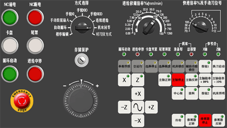

| 单程序运行 | 空运行 | 选择停止 | |||
| 选择跳读 | 机床锁住 | 辅助功能锁住 | |||
| 按钮1 | 换刀启动 | 主轴正转 | |||
| 主轴反转 | 主轴停止 | 主轴倍率+10% | |||
| 主轴倍率-10% | 中心架 | 接料 | |||
| 按钮2 | 机床照明 | 冷却 | |||
| 排屑器正转 | 排屑器停止 | 排屑器反转 | |||
| X轴方向 | Z轴方向 | X轴负向移动 | |||
| Z轴负向移动 | X轴正向移动 | Z轴正向移动 | |||
| 快速进给 | |||||
| 循环启动 | 进给中停 | 卡盘 | |||
| NC断电 | NC通电 | 尾架 |

| 循环启动指示灯 | 进给中停指示灯 | 尾架顶紧指示灯 | |||
| 卡盘夹紧指示灯 | 机床状态指示灯 | 参考点指示灯 |
| 长城机床厂 FANUC 0i MATE-TB操作面板 |
| 返回<<< |
 |
|||||||||||||||||||||||||||||||||||||||||||||||||||||||||||||||||||||||||||||
|
|||||||||||||||||||||||||||||||||||||||||||||||||||||||||||||||||||||||||||||
|
|||||||||||||||||||||||||||||||||||||||||||||||||||||||||||||||||||||||||||||
|
手轮 | 急停 | 程序保护 | ||||||||||||||||||||||||||||||||||||||||||||||||||||||||||||||||||||||||||
|
|||||||||||||||||||||||||||||||||||||||||||||||||||||||||||||||||||||||||||||